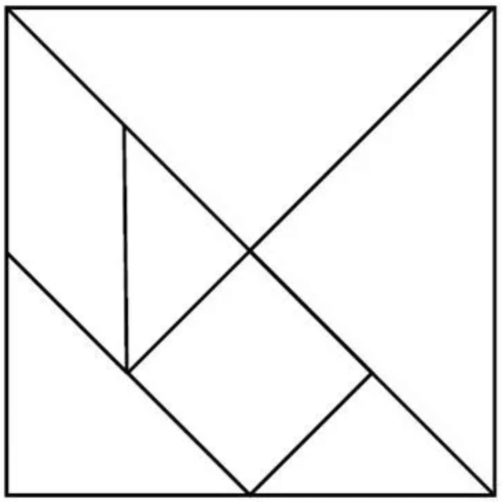

DSCI 220, 2025 W1
January 6, 2026
Make at least 3 observations about the following table:
| p | q | p ∨ q |
|---|---|---|
| F | F | F |
| F | T | T |
| T | F | T |
| T | T | T |
Key observations about the table:
| p | q | p ∨ q |
|---|---|---|
| F | F | F |
| F | T | T |
| T | F | T |
| T | T | T |
Some questions to ponder:
| p | q | p ∨ q |
|---|---|---|
| F | F | F |
| F | T | T |
| T | F | T |
| T | T | T |
How many rows for a proposition on 3 variables? k variables?
Give a good name for an operator that takes 1 variable: __________
Give a good name for an operator that takes 3 variables: __________
How many different binary operators could there be?
All graded learning activities in the course will use a tool called PrairieLearn.
Navigate to today’s activity and complete question 1
https://us.prairielearn.com/pl/course_instance/186238/assessment/2562335
Propositions can be more complex than just a single operator!
Example:
| p | q | ~(p ∨ q) |
|---|---|---|
| F | F | T |
| F | T | F |
| T | F | F |
| T | T | F |
A well-formed formula is a Boolean statement generated by the following rules:
Speculate:
A well-formed formula is a Boolean statement generated by the following rules:
This definition is in the form of a Grammar.
_____________: <wff> and <atom>
_____________: p, q, r, s …
It is our first self-referential or recursive definition.
Example derivation:
<wff>
Grammars can be used to construct many different sequences.
We could have included additional operators \(\rightarrow\), \(\leftrightarrow\), \(\oplus\), \(\uparrow\)
Computational evaluation of <wff>is covered in DSCI221. For now, we trust Python and focus on logic.
The <wff> are propositions.
Ex: Is it true that \((p \lor q) \equiv (q\lor p)\) ?
Discussion points:
\(\equiv\) means logically equivalent
The answer had better be _________!!!
How can we justify our instinct?
Questions:
Why did we do this?
This course will teach you a bajillion different things!
Teaching Professor, at UBC since 2017 (previously at University of Illinois Urbana-Champaign).
Teaches mid-level required courses for CS specializations (mostly CPSC 221) & a similar course for non-majors!
Lectures: in-class activities based on problem solving and design.
Labs: practice on lecture material
Problems of the day (POTD): one per (week)day, 5/week, ~ 50 / term
Projects: 3 total
Assessments: 6 tests (examlets) + final
You must satisfy ALL conditions to pass the course:
If students do not satisfy the appropriate requirements, the student will be assigned the lower of their earned course grade or a maximum overall grade of 45 in the course.
| Item | Weight | Due date(s) |
|---|---|---|
| Learning Logs | 5% (10 x 0.5%) | Saturdays at 6 PM |
| Problems of the Week | 25% (10 x 2.5%) | Fridays at 6 PM |
| Labs | 5% (10 x 0.5%) | Fridays at 6 PM |
| Programming Projects | 15% (3 x 5%) | Three in the term |
| Tests (Examlets) | 30% (6 x 5%) | ~ Bi-weekly |
| Final Exam | 20% | TBD |
Grace period for due dates
All due dates in this course have an automatic 48-hour grace period after the due dates listed above. Any submissions submitted past the grace period will not be graded (with some exceptions).
| Handcraft | Billboard Hot 100 | The Overstory and Pointillism | Artificial Music Composition | Road Trip Planning | Spiderman’s Social Network |
|---|---|---|---|---|---|
Design Objects Iteration |
Web Scraping Data Frames MatPlotLib |
Voronoi Diagrams Efficiency |
Markov Chains Random Numbers Graphs |
Traveling Salesperson Intractable Problems |
Natural Language |
This course consists of a sequence of six explorations, assembled to provide a tour through data structure applications and algorithmic design. Built around topics from arts, sciences, and technology, the explorations are thought provoking and engaging. You will emerge from the course with increased proficiency in Python programming, and with a broad spectrum of tools for algorithmic problem solving.
Ed Discussion: class discussion forum
PrairieLearn: platform to help us give you feedback on work you do!
GitHub: code repository and version control
Visual Studio Code: developer environment
Canvas: basically just a place for you to find all the relevant links to things…
05:00

Define a small working group of size up to 4.
One of you share: https://mathigon.org/tangram
Solve as many as you’d like, together
Speculate together on why you’re doing this!!
10:00
20:00
20:00